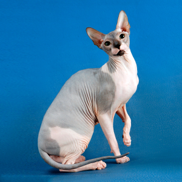

 Голые кошки упоминались еще в документах античных времен. Особенно культ лысых кошек заметен в Древнем Египте - до сих пор обнаруживаются находки предметов, на которых изображались сфинксы. Преклонение перед этими животными не случайно. Считается, что сфинксы обладают особыми целебными качествами: они излечивают головную боль и нервные расстройства, помогают при заболеваниях опорно-двигательной системы, боли в мышцах. Также сфинксов во все времена считали неземными, инопланетными созданиями, которые имеют связь с потусторонними силами. Кроме пользы для человеческого здоровья, выделили ещё одно бесспорное достоинство бесшерстных кошек - их по-королевски величественный вид и удивительная грациозность. Необычайная внешность сфинкса завораживает. Невозможно не заметить нечто магическое в их чарующем взгляде. Интересным фактом является то, что в России появилась своя порода лысых кошек - донской сфинкс. Первое упоминание о бесшерстных кошках встречается в 1987 году, когда в Ростове-на-Дону обнаружили полулысую кошку, названную Варварой, от которой позже родились бесшерстные котята. Так и появилась порода донской сфинкс, которая считается одной из самых молодых кошачьих пород. Сохранилась она благодаря приливанию крови европейских короткошерстных кошек. Донской сфинкс отличается спокойным, мирным и даже ленивым характером. Любимое времяпровождение для этой породы - спать, свернувшись калачиком. При этом эти животные довольно игривы и с легкостью запоминают команды хозяина, хотя и не всегда спешат их выполнять из-за своего независимого характера. Донские сфинксы ведут себя не просто как обычные кошки. Они считают людей равными себе, поэтому не стоит ждать от этих домашних любимцев безусловной покорности, даже при всей их доброте. С виду донской сфинкс больше напоминает собаку, чем кошку. У него мускулистое, массивное тело, раскосые глаза миндалевидной формы, длинный хвост и уши. Лапки у представителей данного вида удлинены, а пальцы на них очень сильно напоминают человеческие. Еще одна порода, произошедшая от донского сфинкса - русская бесшерстная. Она получилась путем скрещивания с турецкой ангорой и русской голубой. Полученный вид кошек отличался особой элегантностью, а их главной отличительной чертой были ярко-изумрудные раскосые глаза. Позже осуществлялись попытки скрестить донского сфинкса с другими породами короткошерстных кошек. Так, за немногие годы своего существования, от донского сфинкса вывелось ещё несколько линий бесшерстных кошек. Попытки скрещивания с сиамскими восточными короткошерстными кошками увенчались успехом - полученная порода оказалась удачной: у этих кошек получился более утонченный корпус, более вытянутые конечности и длинные, разведенные в стороны уши. Эта порода получила название петербургский сфинкс, или петерболд. Несмотря на то, что донской сфинкс и другие линии русских лысых кошек появились уже больше десятка лет назад, до сих пор не определены стандарты их разведения для всех питомников. Стоит вопрос о том, разрешить ли скрещивание чистых донских сфинксов, либо продолжать эксперименты с приливанием крови от других видов. Проблема приливания заключается в том, что всё сложнее становится определить точную видовую принадлежность кошек. Даже многие эксперты в этой области часто не сходятся во мнениях, и не могут точно обозначить, к какой породе относится кошка без подробного изучения её родословной. Также скрещивания часто приводят к появлению не чисто лысых кошек - появляются котята с небольшой волнистой шерстью, которая на определенном периоде жизни выпадает, или котята с короткой жесткой шерсткой, остающейся на всю жизнь. Есть вероятность появления пороков при скрещивании двух видов русских лысых кошек: у них бывают проблемы с глазами, заломы на хвосте, завороты желудка и пороки сердца. Поэтому генетические эксперименты - очень серьезное и ответственное дело. Для того чтобы благополучно разводить донов и получать здоровое потомство, недостаточно знать основы генетики. Необходимо внимательно изучить особенности их выведения, историю развития, и учесть всевозможные последствия мутационных процессов. Уход за донскими сфинксами имеет свои особенности, ведь тяжело найти еще породу котов, которая настолько же сильно была отдалена от условий природной среды обитания. Эти кошки очень теплолюбивы, поэтому содержать их нужно исключительно в теплых помещениях, где отсутствует сквозняк. Также донских сфинксов нужно кормить лучше, чем другие породы - им нужно давать больше пищи, ведь у них очень сильная теплоотдача и, как следствие, большая потеря энергии. Кормить следует несколько раз в день - разделив приблизительно на 3-4 приема пищи. Рацион желательно подбирать тщательно, проконсультировавшись у специалистов. Эти кошки могут съесть многое: овощи и фрукты, сладкое, мучное. Однако не стоит при этом давать им есть всё, что они хотят - потом могут возникнуть проблемы с желудком или кишечником. Донского сфинкса можно не купать часто, достаточно обтирать его теплой влажной тканью. Однако всё же купание для донов необходимо, ведь если этого не делать, то питомцы начинают неприятно пахнуть и появляется вероятность появления различных заболеваний. Многие гигиенические процедуры донские сфинксы переносят намного легче, чем другие их кошачьи собратья. Например, подстригание когтей они свободно доверяют людям. При этом хозяевам не стоит опасаться быть поцарапанными своими домашними любимцами. Котята быстро понимают, как пользоваться кошачьим туалетом, что избавляет их владельцев от многих неприятностей. Также они быстро находят общий язык с другими домашними животными. Они настолько миролюбивы, что могут абсолютно бесконфликтно существовать даже с собаками. У кошек донского сфинкса отлично развит материнский инстинкт, поэтому они самостоятельно справляются с родами без особых проблем. Беременность, как правило, у них проходит легко. Котята рождаются сильными и крепкими, и развиваются быстрее, чем у многих других видов. Отличительная черта донских сфинксов в том, что их котята открывают глаза уже на вторые или третьи сутки после рождения. Но встречаются случаи, что котята рождаются уже с открытыми глазами. Поэтому необходима тщательная забота со стороны хозяина о здоровье малышей. Несмотря на то, что донской сфинкс - порода достаточно молодая, ее развитие происходит очень быстро. Донские сфинксы за последние несколько лет распространились по всему миру: США, Европе, Китаю. Раньше они считались явной экзотикой, но сейчас о них знают очень многие, причем часто не только понаслышке, ведь этих кошек можно встретить теперь и в небольших городах. Эта порода - просто идеальный вариант для людей, у которых аллергия на кошачью шерсть. Так же ее, безусловно, оценят все ценители утонченности и оригинальности. Однако если вы не привыкли уделять достаточно внимания своим домашним питомцам, то не стоит заводить донского сфинкса, ведь они не могут жить без человеческой заботы и любви, и очень сильно привыкают к своим хозяевам.